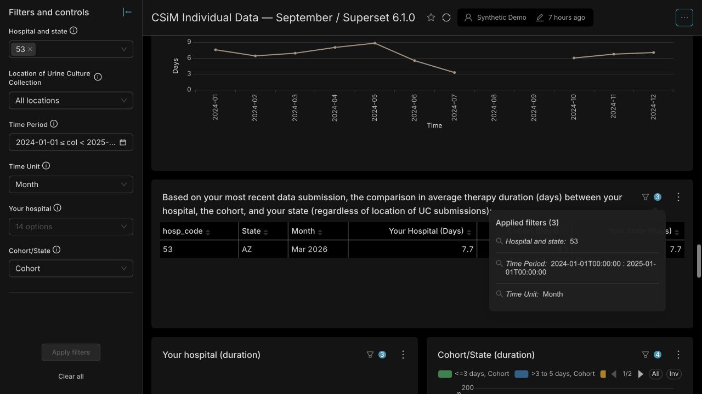

1. Seven panels have misleading date-filter indicators
The five overall charts and two latest-month tables list Time Period and Time Unit as applied, but their results do not use those controls.
Selecting 2024 changes the therapy trend to 2024, while the adjacent table still shows March 2026.
Whether these panels should keep their all-time/latest-month meaning or follow the selected period is undecided. Their calculations have not changed.
See the screenshot and verification details

The trend follows 2024. The table retains March 2026 while claiming the same date filter is applied.All seven panels return the same results for hospital 53 when changing from calendar 2024 / Month to September 2025–August 2026 / Year. Their dataset queries do not use the date range. The screenshot demonstrates the therapy-table case.
2. Sections 4.2 and 5 mix controls and date coverage
In 4.2, the trend/table use the upper hospital selector; the paired charts use the lower selectors. In 5, the selected-period trend cannot be directly compared with an all-time total unless the hospital, location and dates match.
3. Some opening blanks require a hospital selection
The default Cohort selection does not populate tables requiring one hospital. Lower hospital panels require Your hospital. These blanks do not, by themselves, mean data is missing.
5. Reporting dates are monthly; upload dates are different
The date editor accepts specific days, but observations have month/year precision. Use the first day of the starting month and the first day after the final month: February through March means February 1 to April 1. The end date is excluded.
The upload note is manually maintained; the latest-reporting-month card is calculated from observations. Uploading July data in September does not change its reporting month to September.